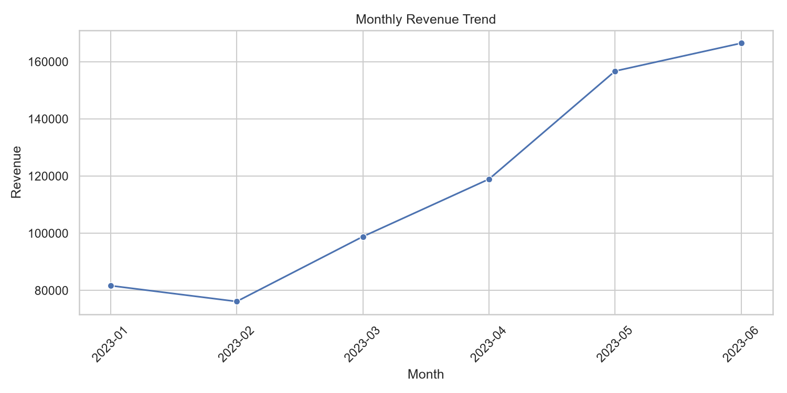
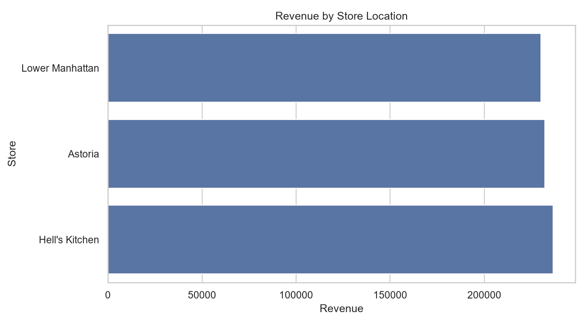
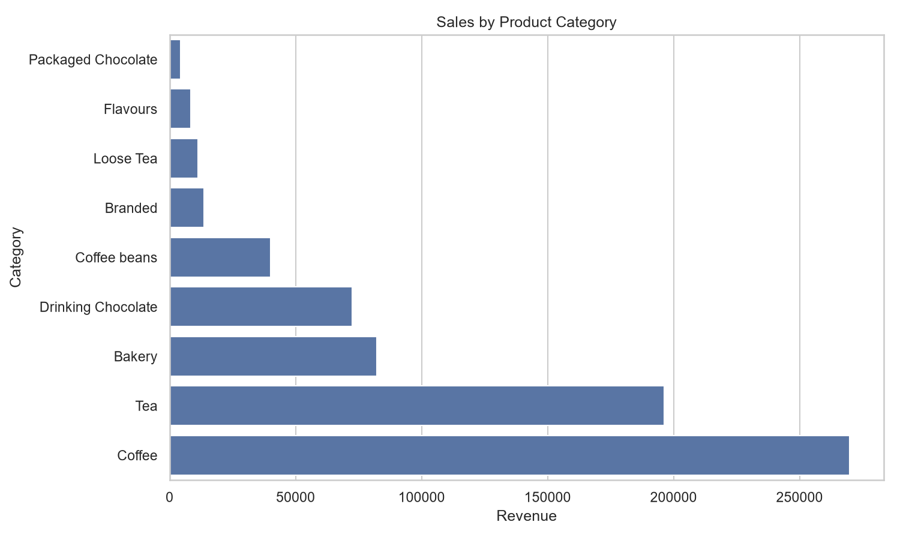
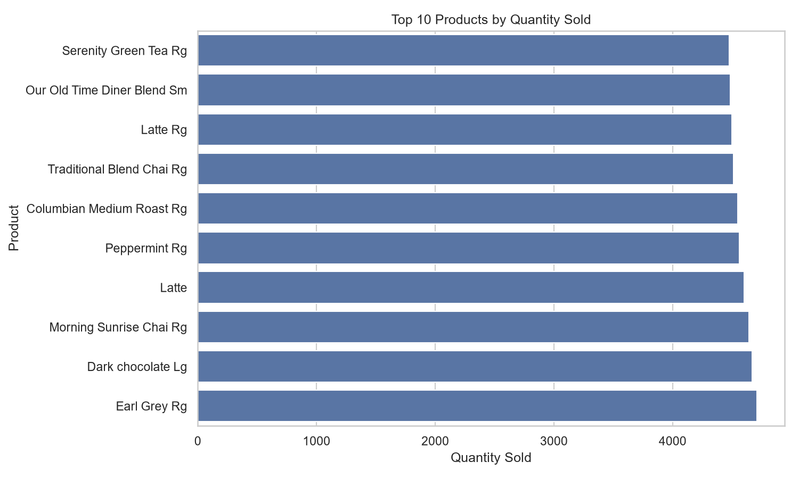
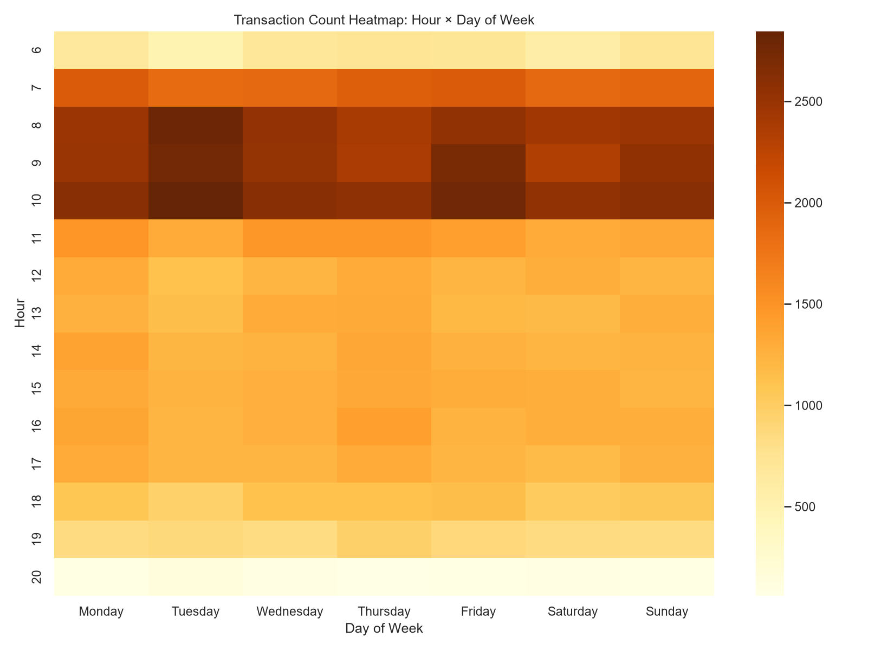

총매출 (USD)
$698,812.33
COFFEE INSIGHT
데이터로 발견하는 매출의 패턴
데이터명: Maven Roasters Coffee Shop Sales 데이터 : 뉴욕의 가상 카페 3개 매장 거래 기록
분석 대상: 카페 판매 기록
분석 도구: Python, Pandas, Matplotlib
시각화: Seaborn
$698,812.33
214,470개





*히트맵은 매출액이 아니라 거래 기록수를 나타내는 그래프다*

1~2월 이후 매출이 꾸준히 증가하는 추세를 보이며, 6월에 가장 높은 매출을 기록했습니다.
커피 카테고리의 매출 비중이 가장 높고, 차(Tea) 카테고리가 그 뒤를 잇고 있습니다.
오전 시간대에 판매 기록이 집중되는 경향이 있습니다. 혼잡 시간대에 맞춘 인력 배치가 필요합니다.